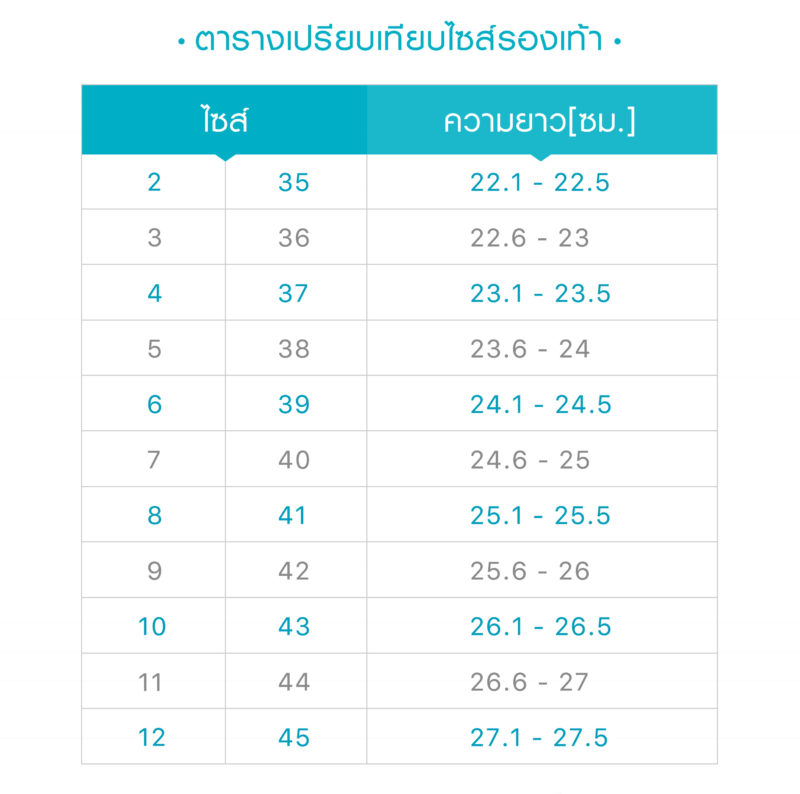

@@include('header.htm')

@@include('blocks/navigation.htm')

@@include('blocks/page-header.htm', {
    "title": "How to measure your feet",
    "pagination": "Size"
})


<section class="page-wrapper">
	<div class="container">
		<div class="row">
			<div class="col-md-12">
				<div class="post post-single">
					<div class="post-thumb">
						
						<center></center>
					</div>
				</div>
			</div>
		</div>
	</div>
</section>

@@include('blocks/footer.htm')

@@include('footer.htm')